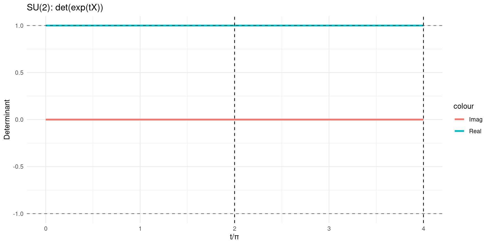

Chapter 13 SU(2) Special Unitary Group
pauli_matrices <- function() {
list(x = matrix(c(0, 1, 1, 0), 2, 2),
y = matrix(c(0, -1i, 1i, 0), 2, 2),
z = matrix(c(1, 0, 0, -1), 2, 2))
}
sigma <- pauli_matrices()
X_su2 <- 1i * sigma$x / 2
exp_2pi <- expm(2*pi*X_su2)
exp_4pi <- expm(4*pi*X_su2)
su2_props <- data.frame(
Property = c("X is traceless", "X is anti-Hermitian",
"exp(2π·X) = -I", "exp(4π·X) = I"),
Verified = c(
abs(sum(diag(X_su2))) < 1e-14,
max(abs(X_su2 + Conj(t(X_su2)))) < 1e-14,
max(abs(exp_2pi + diag(2))) < 1e-10,
max(abs(exp_4pi - diag(2))) < 1e-10
)
)
kable(su2_props, caption = "SU(2) Double Cover") %>%
kable_styling() %>%
column_spec(2, bold = TRUE, color = ifelse(su2_props$Verified, "green", "red"))| Property | Verified |
|---|---|
| X is traceless | TRUE |
| X is anti-Hermitian | TRUE |
| exp(2π·X) = -I | TRUE |
| exp(4π·X) = I | TRUE |
t_vals <- seq(0, 4*pi, length.out = 200)
# Compute determinants - use product of eigenvalues for complex matrices
dets <- sapply(t_vals, function(t) {
M <- expm(t*X_su2)
prod(eigen(M, only.values = TRUE)$values)
})
ggplot(data.frame(t = t_vals/pi, real = Re(dets), imag = Im(dets))) +
geom_line(aes(x = t, y = real, color = "Real"), size = 1.2) +
geom_line(aes(x = t, y = imag, color = "Imag"), size = 1.2) +
geom_hline(yintercept = c(-1, 1), linetype = "dashed", alpha = 0.5) +
geom_vline(xintercept = c(2, 4), linetype = "dashed") +
labs(title = "SU(2): det(exp(tX))", x = "t/π", y = "Determinant") +
theme_minimal()